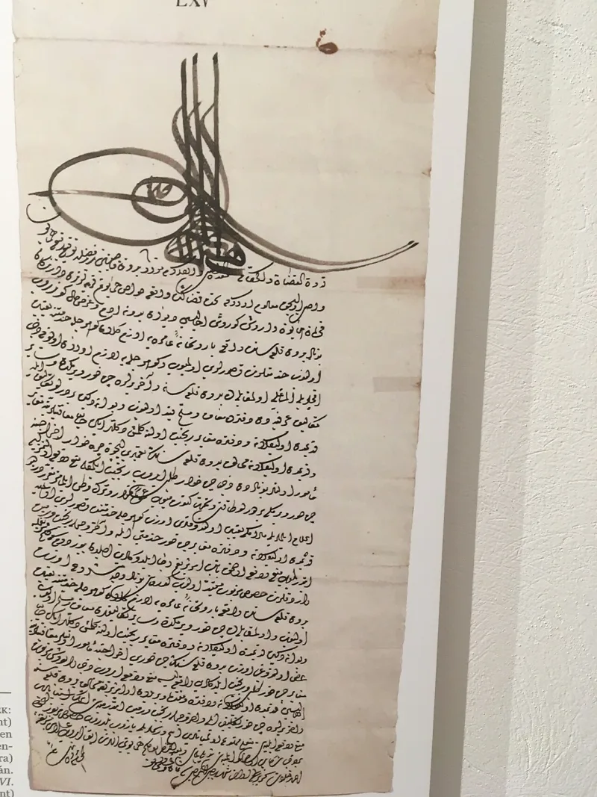
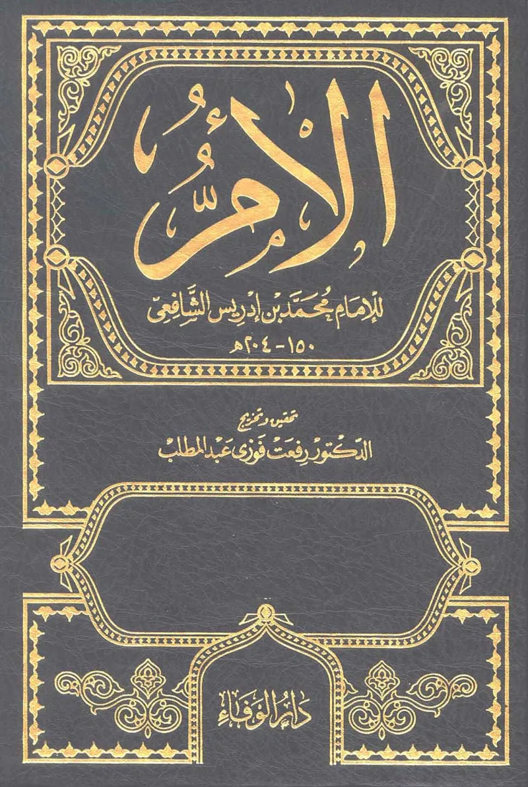
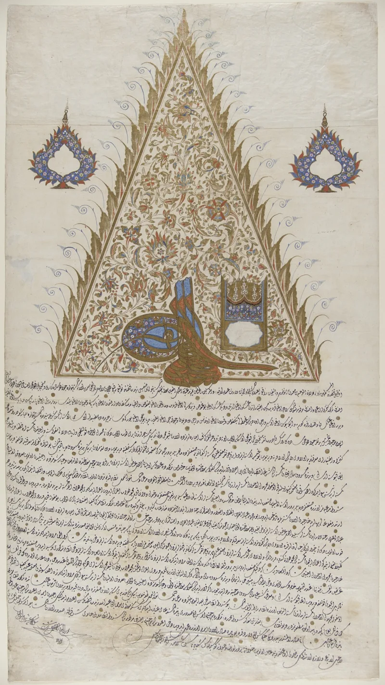

The facts sit in Islam's own trusted sources. You can make this point from their books alone.
Leaving Islam carries the death penalty in classical law. "Whoever changes his religion, kill him" (Sahih al-Bukhari 6922).
Sahih al-Bukhari 6878 lists apostasy among three grounds for lawful killing. All four Sunni schools carried the ruling.
It is still law in several states.
Quran 9:29 commands fighting the People of the Book "until they pay the jizya willingly while they are humbled." That set up the dhimmi system, a protected but lowered status. Then there are the hudud penalties.
Quran 5:38 sets cutting off the hand for theft. Stoning for adultery comes from the sunnah (Sahih al-Bukhari 6829; Sahih Muslim 1690).
Faith is not coerced. "If anyone hears my words and does not keep them, I do not judge him" (John 12:47).
Wheat and weeds grow together until harvest (Matthew 13:29-30). The sword is put away (Matthew 26:52; John 18:36).
Those who leave are to be won back gently (2 Timothy 2:24-26).
Reform-minded scholars answer from inside the tradition. Quran 2:256 says there is no compulsion in religion.
The Quran prescribes no worldly penalty for apostasy at all; the death penalty rests on hadith. Jonathan Brown and Taha Jabir Alalwani read it as history.
It punished treason in wartime, not private belief. Jizya was a tax in place of army service.
It was often lighter than the zakat Muslims paid, and dhimmi status gave real cover for its era. Hudud rules also carry near impossible proof standards, such as four eyewitnesses.
That was meant to make them rare.
They admit the provisions themselves. The reformist case is genuine scholarship, but it argues against the classical consensus rather than denying the texts.
The point here is pastoral, not polemical. This is why your friend's hesitation is not stubbornness.
It is why confidentiality for a seeker is not optional. And it is why counting the cost (Luke 14:28) belongs in the conversation.
"If you ever wanted to look into Jesus, what would it cost you? I want to know before we go further."



They say the death penalty punished wartime treason, not a change of belief.
Reform-minded Muslim scholars argue from inside the tradition. No compulsion in religion (2:256) is the Quran's own rule. And the Quran sets no worldly penalty for apostasy at all.
The death penalty rests on hadith. They read it in its setting. It punished treason against the Muslim state in wartime, not a private change of belief. Jonathan Brown and Taha Jabir Alalwani argue that way, and some modern states have taken it up.
Jizya was a tax in place of army service. It was often lighter than the zakat Muslims paid. And dhimmi status gave real cover, which was unusual for its era. The hudud, the fixed penalties, carry near-impossible proof standards. Theft or adultery needs four eyewitnesses to the act. They were built to be applied rarely — a warning more than a practice.
Strong for you, but this one is pastoral: your friend's fear is real.
The provisions themselves are granted. The apostasy hadith is in Bukhari. All four classical schools carried the ruling. Mainstream fatwa sites still affirm it. And about a dozen states punish apostasy today, several of them with death.
The reformist steelman is genuine scholarship. But it argues against what classical scholars agreed, not against the sources being there. Every reformer has to square no compulsion with the harsh texts, precisely because those texts exist.
The stake here is pastoral, not polemical. This is why your Muslim friend's fear is not stubbornness. It is why safety and privacy for a seeker are not optional. And it is why counting the cost (Luke 14:28) belongs in the conversation.